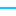

<!doctype html>
<html lang="en">
    <head>
        <meta http-equiv="X-UA-Compatible" content="IE=edge">
        <meta name="viewport" content="initial-scale=1,user-scalable=no,maximum-scale=1,width=device-width">
        <meta name="mobile-web-app-capable" content="yes">
        <meta name="apple-mobile-web-app-capable" content="yes">
        <link rel="stylesheet" href="css/leaflet.css"><link rel="stylesheet" href="css/L.Control.Locate.min.css">
        <link rel="stylesheet" href="css/qgis2web.css"><link rel="stylesheet" href="css/fontawesome-all.min.css">
        <link rel="stylesheet" href="css/leaflet-measure.css">
        <style>
        html, body, #map {
            width: 100%;
            height: 100%;
            padding: 0;
            margin: 0;
        }
        </style>
        <title></title>
    </head>
    <body>
        </div>
        <div id="map">
        </div>
        <script src="js/qgis2web_expressions.js"></script>
		<script src="https://unpkg.com/leaflet-lasso@2.2.12/dist/leaflet-lasso.umd.js"></script
        <meta charset="utf-8">
        <script src="js/leaflet.js"></script><script src="js/L.Control.Locate.min.js"></script>
        <script src="js/leaflet.rotatedMarker.js"></script>
        <script src="js/leaflet.pattern.js"></script>
        <script src="js/leaflet-hash.js"></script>
        <script src="js/Autolinker.min.js"></script>
        <script src="js/rbush.min.js"></script>
        <script src="js/labelgun.min.js"></script>
        <script src="js/labels.js"></script>
        <script src="js/leaflet-measure.js"></script>
        <script src="data/SubmarineCables_1.js"></script>
        <script>
        var highlightLayer;
        function highlightFeature(e) {
            highlightLayer = e.target;

            if (e.target.feature.geometry.type === 'LineString') {
              highlightLayer.setStyle({
                color: '#ffff00',
              });
            } else {
              highlightLayer.setStyle({
                fillColor: '#ffff00',
                fillOpacity: 1
              });
            }
            highlightLayer.openPopup();
        }
        var map = L.map('map', {
            zoomControl:true, maxZoom:28, minZoom:1
        }).fitBounds([[-44.19434200968813,-202.64690439163036],[111.81876935493776,18.06857708495093]]);
        var hash = new L.Hash(map);
        map.attributionControl.setPrefix('<a href="https://github.com/tomchadwin/qgis2web" target="_blank">qgis2web</a> &middot; <a href="https://leafletjs.com" title="A JS library for interactive maps">Leaflet</a> &middot; <a href="https://qgis.org">QGIS</a>');
        var autolinker = new Autolinker({truncate: {length: 30, location: 'smart'}});
        L.control.locate({locateOptions: {maxZoom: 19}}).addTo(map);
        var measureControl = new L.Control.Measure({
            position: 'topleft',
            primaryLengthUnit: 'meters',
            secondaryLengthUnit: 'kilometers',
            primaryAreaUnit: 'sqmeters',
            secondaryAreaUnit: 'hectares'
        });
        measureControl.addTo(map);
        document.getElementsByClassName('leaflet-control-measure-toggle')[0]
        .innerHTML = '';
        document.getElementsByClassName('leaflet-control-measure-toggle')[0]
        .className += ' fas fa-ruler';
        var bounds_group = new L.featureGroup([]);
        function setBounds() {
        }
        map.createPane('pane_DarkMatter_0');
        map.getPane('pane_DarkMatter_0').style.zIndex = 400;
        var layer_DarkMatter_0 = L.tileLayer('http://a.basemaps.cartocdn.com/dark_all/{z}/{x}/{y}.png', {
            pane: 'pane_DarkMatter_0',
            opacity: 1.0,
            attribution: '<a href="https://cartodb.com/basemaps/">Map tiles by CartoDB, under CC BY 3.0. Data by OpenStreetMap, under ODbL.</a>',
            minZoom: 1,
            maxZoom: 28,
            minNativeZoom: 0,
            maxNativeZoom: 20
        });
        layer_DarkMatter_0;
        map.addLayer(layer_DarkMatter_0);
        function pop_SubmarineCables_1(feature, layer) {
            layer.on({
                mouseout: function(e) {
                    for (i in e.target._eventParents) {
                        e.target._eventParents[i].resetStyle(e.target);
                    }
                    if (typeof layer.closePopup == 'function') {
                        layer.closePopup();
                    } else {
                        layer.eachLayer(function(feature){
                            feature.closePopup()
                        });
                    }
                },
                mouseover: highlightFeature,
            });
            var popupContent = '<table>\
                    <tr>\
                        <td colspan="2"><strong>OBJECTID</strong><br />' + (feature.properties['OBJECTID'] !== null ? autolinker.link(feature.properties['OBJECTID'].toLocaleString()) : '') + '</td>\
                    </tr>\
                    <tr>\
                        <td colspan="2"><strong>Name</strong><br />' + (feature.properties['Name'] !== null ? autolinker.link(feature.properties['Name'].toLocaleString()) : '') + '</td>\
                    </tr>\
                    <tr>\
                        <td colspan="2"><strong>cable_id</strong><br />' + (feature.properties['cable_id'] !== null ? autolinker.link(feature.properties['cable_id'].toLocaleString()) : '') + '</td>\
                    </tr>\
                    <tr>\
                        <td colspan="2"><strong>length</strong><br />' + (feature.properties['length'] !== null ? autolinker.link(feature.properties['length'].toLocaleString()) : '') + '</td>\
                    </tr>\
                    <tr>\
                        <td colspan="2"><strong>owners</strong><br />' + (feature.properties['owners'] !== null ? autolinker.link(feature.properties['owners'].toLocaleString()) : '') + '</td>\
                    </tr>\
                    <tr>\
                        <td colspan="2"><strong>url</strong><br />' + (feature.properties['url'] !== null ? autolinker.link(feature.properties['url'].toLocaleString()) : '') + '</td>\
                    </tr>\
                </table>';
            layer.bindPopup(popupContent, {maxHeight: 400});
        }

        function style_SubmarineCables_1_0() {
            return {
                pane: 'pane_SubmarineCables_1',
                opacity: 1,
                color: 'rgba(28,195,248,1.0)',
                dashArray: '',
                lineCap: 'square',
                lineJoin: 'bevel',
                weight: 2.0,
                fillOpacity: 0,
                interactive: true,
            }
        }
        map.createPane('pane_SubmarineCables_1');
        map.getPane('pane_SubmarineCables_1').style.zIndex = 401;
        map.getPane('pane_SubmarineCables_1').style['mix-blend-mode'] = 'normal';
        var layer_SubmarineCables_1 = new L.geoJson(json_SubmarineCables_1, {
            attribution: '',
            interactive: true,
            dataVar: 'json_SubmarineCables_1',
            layerName: 'layer_SubmarineCables_1',
            pane: 'pane_SubmarineCables_1',
            onEachFeature: pop_SubmarineCables_1,
            style: style_SubmarineCables_1_0,
        });
        bounds_group.addLayer(layer_SubmarineCables_1);
        map.addLayer(layer_SubmarineCables_1);
        map.createPane('pane_DarkMatterlabelsonly_2');
        map.getPane('pane_DarkMatterlabelsonly_2').style.zIndex = 402;
        var layer_DarkMatterlabelsonly_2 = L.tileLayer('https://a.basemaps.cartocdn.com/dark_only_labels/{z}/{x}/{y}.png', {
            pane: 'pane_DarkMatterlabelsonly_2',
            opacity: 1.0,
            attribution: '<a href="https://cartodb.com/basemaps/">Map tiles by CartoDB, under CC BY 3.0. Data by OpenStreetMap, under ODbL.</a>',
            minZoom: 1,
            maxZoom: 28,
            minNativeZoom: 0,
            maxNativeZoom: 20
        });
        layer_DarkMatterlabelsonly_2;
        map.addLayer(layer_DarkMatterlabelsonly_2);
        var baseMaps = {};
        L.control.layers(baseMaps,{"Dark Matter [labels only]": layer_DarkMatterlabelsonly_2,' Submarine Cables': layer_SubmarineCables_1,"Dark Matter": layer_DarkMatter_0,},{collapsed:false}).addTo(map);
        setBounds();
        </script>
    </body>
</html>
